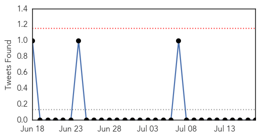
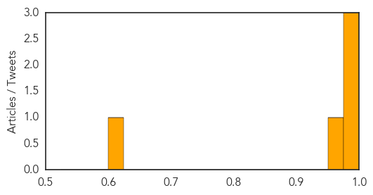

Cholera
30-Day Web Trend
1 alerts, 0 warnings

30-Day Twitter Trend
0 alerts, 0 warnings

Article Locations
Article Confidences
Top Articles:
- 0.999
- Cholera outbreak in South Sudan claims 60 lives, with fears outbreak will worsen
- 0.995
- Ban Ki-moon: UN to help Haiti fight cholera epidemic
- 0.992
- U.N. chief makes 'pilgrimage' to Haiti to address cholera crisis
- 0.963
- Feature: Haiti witnesses declining cholera rates, significant gains in development - Haiti
- 0.605
- Gulfport man survives flesh-eating bacteria after fishing in gulf
Top Tweets:
-
No tweets found for Jul 17, 2014
Mumps
30-Day Web Trend
0 alerts, 0 warnings
30-Day Twitter Trend
0 alerts, 0 warnings

Article Locations

Article Confidences

Top Articles:
-
No articles found for Jul 17, 2014
Top Tweets:
-
No tweets found for Jul 17, 2014